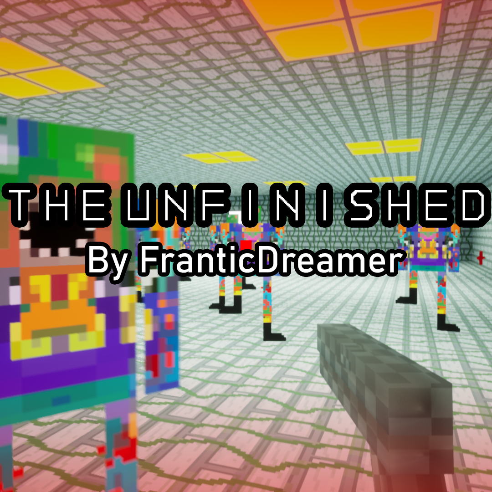
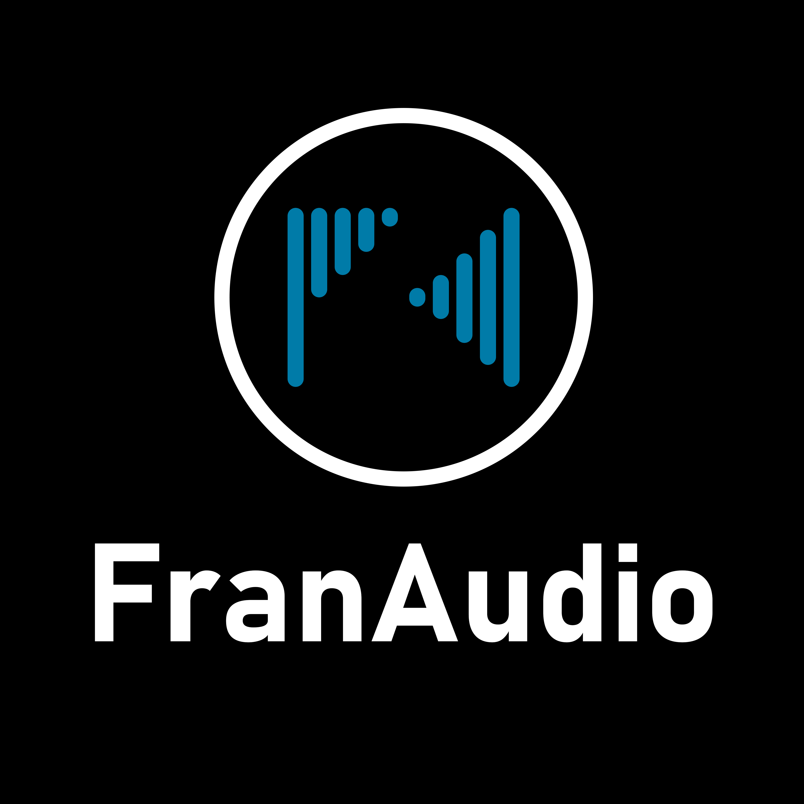
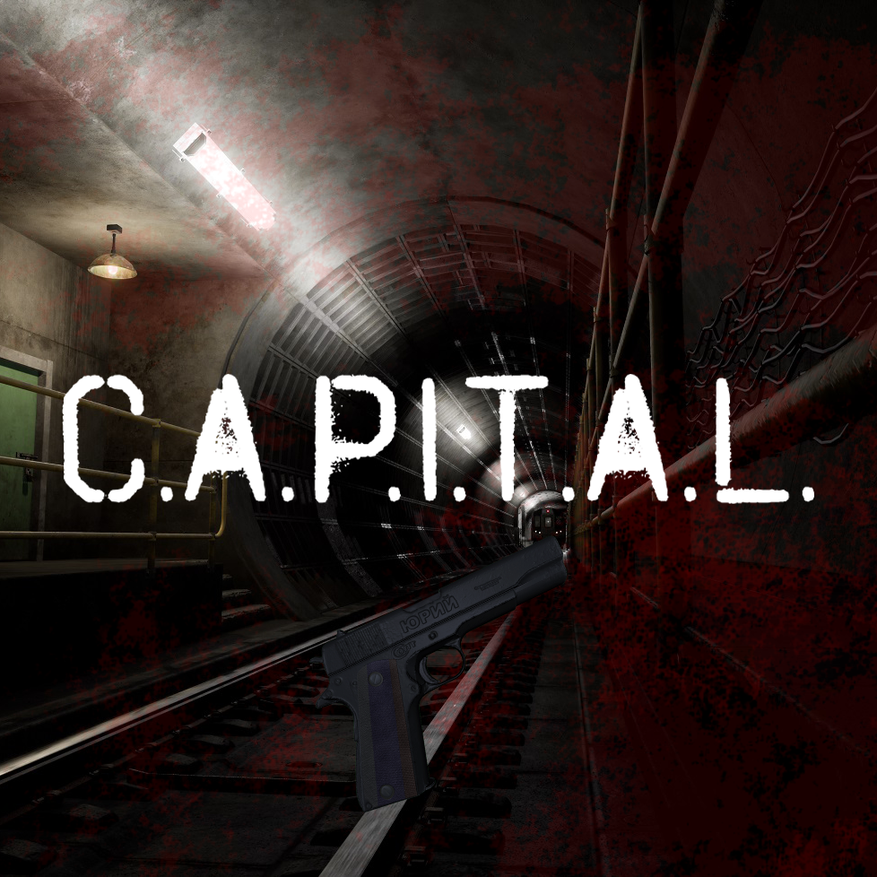
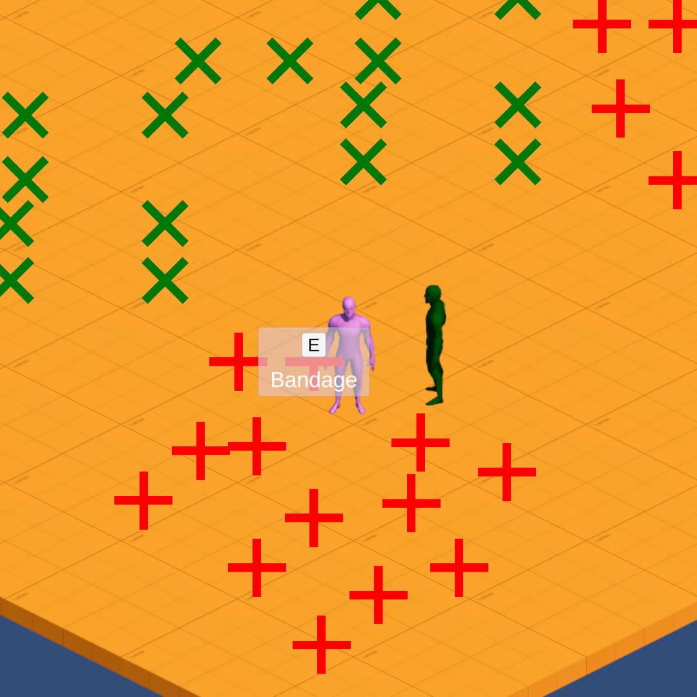
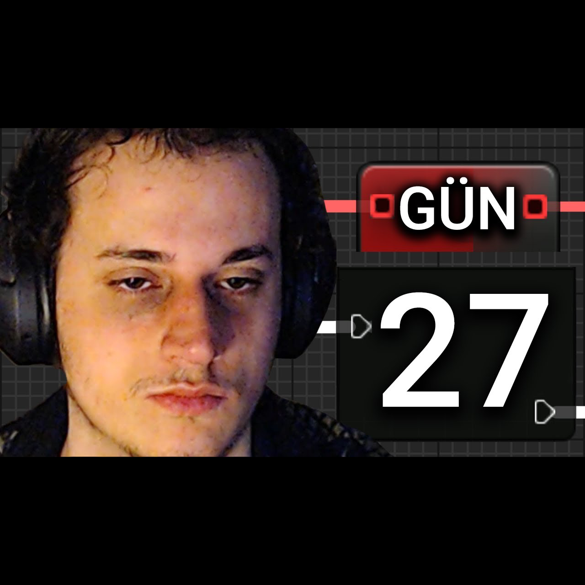
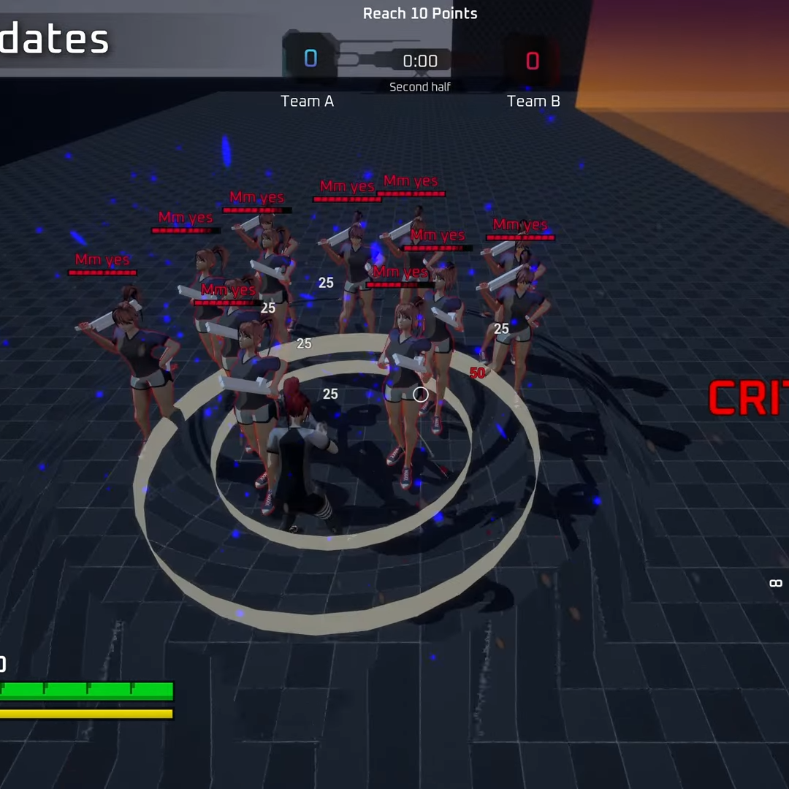
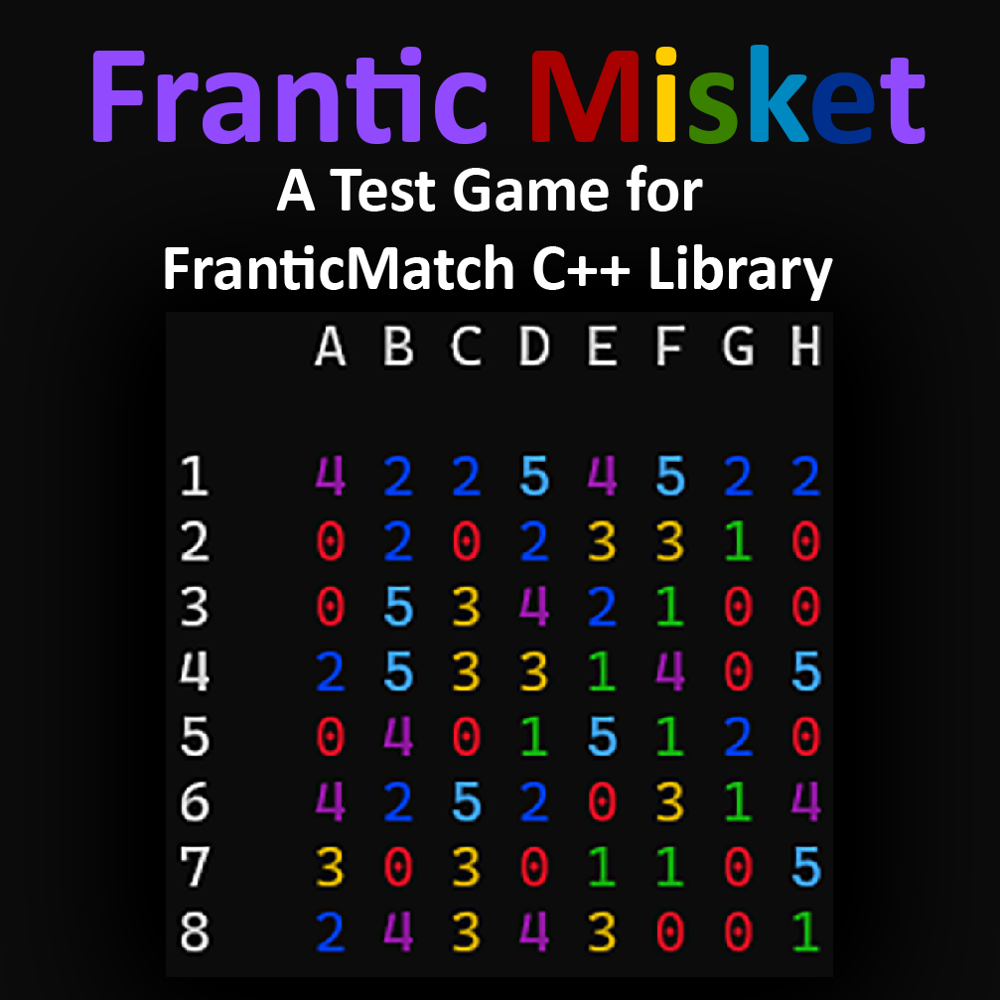
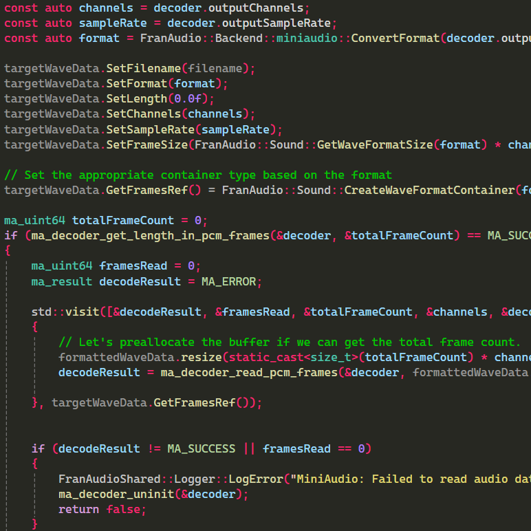

This is the first game I published. I originally published it in 2014 on IndieDB. Later on, I gave it a remaster and re-released it on Steam in 2017
It's a linear horror game that runs on Unity and C#.

This is a game I developed during the Covid-19 pandemic for a gamejam called "Celebrating Programmer Art"
The main idea behind that gamejam was to create a game with programmer art only. I used no third-party assets, minimal assets from the engine itself and created the rest of the assets by myself (including the font!).
It uses Unreal Engine 4, Blueprints and C++ together.

This is an open-source audio library and backend abstraction layer, mainly for games and game engines to use.
It’s fairly new and incomplete for now, but it will evolve fast.
It’s made using C and C++.

This is a prototype project that I've developed in my free time. The client requested it as a tribute for someone, and allowed me to publish after giving him a basic working prototype. So, it will be available on app stores in a short while.
It's a casual arcade/infinite-scroller game, targeted for Android devices and made with Unity using C#.
You defend your liquor store from alkies, and you weaponise your merchandise in the process.

This is a work-in-progress story-based FPS game that I'm working on. It utilises Unreal Engine 5.
This linear story-driven game takes place in Ankara during a zombie outbreak. Utilises Blueprints and C++ together.
Even though the gameplay logic systems are mainly completed, since this is a big and ambitious project, it is temporarily on hold until I get more help and resources.

An Isometric 2D Rougelike Prototype. Works as a base for other games.
It contains Player Controller system, basic AI, Item and Inventory systems and other utilities.
It is planned to be the heart of a story-driven game and a possible base project in asset stores, for now it is just a prototype.

I mentored a friend of mine, Saniye, in his journey of making a game in 30 days with no prior knowledge. He documented the whole process on YouTube.
We used Unreal Engine and developed a simple 3D adventure game.
Check out his
YouTube video for more information.

I'm working as a C++ and Blueprints programmer in a small team for a game called Project Z9. It is a Third-Person MMORPG game, made using Unreal Engine 5.
Project Z9 is still in development, but you can check out our project lead's YouTube channel
YouTube channel for more information and videos.

This is an open-source library for match-x puzzle games, such as Candy Crush, Bejeweled, etc.
It's for abstracting match-x puzzle game logic, so you can focus on the game design more.
It's made using C++, and APIs for C and C# will be available soon.
There's also a
test game available on Itch.io (and in the repository as well), made using this library.

Other Projects
I have worked on many other projects, both personal and professional, that I couldn't list here. These include small games, tools, libraries, mods and more.
If you want to know more about my work or see some of my other projects, feel free to check my GitHub page, contact me!